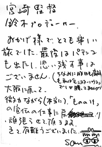

<html>
<head><meta http-equiv="Content-Type" content="text/html; charset=UTF-8">
<script>
  (function(i,s,o,g,r,a,m){i['GoogleAnalyticsObject']=r;i[r]=i[r]||function(){
  (i[r].q=i[r].q||[]).push(arguments)},i[r].l=1*new Date();a=s.createElement(o),
  m=s.getElementsByTagName(o)[0];a.async=1;a.src=g;m.parentNode.insertBefore(a,m)
  })(window,document,'script','https://www.google-analytics.com/analytics.js','ga');
  ga('create', 'UA-143959-3', 'auto');
  ga('require', 'linkid', 'linkid.js');
  ga('require', 'displayfeatures');
  ga('send', 'pageview');
</script>
<title>7月17日（木）新潟 キャンペーンレポート - 映画『もののけ姫』制作日誌</title>
</head>
<body bgcolor="#ffffff" link="#336699" vlink="#336699">

<center>
<font size=5 color=Blue ><b>**「もののけ姫」キャンペーン・伴田（ともだ）さんレポート**</b></font>
</center>
<br>
<p>
<br>
<blockquote>
<b>97.7.17（木）新潟<br></b>
　昨日、上司のお許しを得て赤湯温泉に泊まった「孫くん」こと豊田さんだが、やはり今日はもう早朝の便で帰らなくてはいけなくなった。昨晩、伴田さん、南川さん、整体の先生と4人で温泉に入った後、酒盛り。夜中3時過ぎまで、うだうだと飲んでいた。ちなみにここの温泉は大きな岩をくり貫いた石風呂や、他にも桧風呂や露天風呂もあって「もう最高です。」とのことです。<br>
　「孫くん」は朝7時30分頃ホテルを出なければならなかったのだが、昨晩の酒盛りのため、みんなダウンしており見送りできず。だた一人宮崎監督だけが「お客さんが来ない。」と、ずっとホテルの前に止まっているタクシーを見て、「これは「孫くん」に違いない」とロビーで待っていると、案の定、「孫くん」がふらふらとやって来た。宮崎監督が目の前にいるにもかかわらず、気づかず通りすぎようとしたところ、監督に「孫くん」と声をかけられてようやく気づく。宮崎監督に見送ってもらい、一路大阪に旅立って行った。ちなみに「孫くん」は宮崎監督と鈴木プロデューサー宛に手紙を書いて置いていったので紹介します。<br>
<p>
<center>
<table border><tr><td>
<br>
</td></tr></table>
<font size=1>「孫くん」からの手紙</font>

</center>
<p>
　整体の先生も今日東京へ戻るため、ここでお別れ。<br>
　宮崎監督一行は、山形から新潟へ。しかし、山形から新潟へ向かう電車はローカル線が一日二本だけ。しかも、かなり時間がかかってしまう。地図上では隣合わせなのに中々不便なのだ。そこで、伴田さんが考えたのは、一度大宮まで戻り、新潟へ入るコース。これだと距離はあるが、新幹線を使うことで時間がかなり短縮される。ただ、監督は「大宮に行くなら帰りたい。生理的に嫌ですね。」「大宮駅に着いても、周りを見ないようにしました。」と言っていたとのこと。<br>
　昼食は車中。<br>
　13時過ぎ、新潟着。ホテルに行きチェックインだけ済ませる。<br>
　まず、新潟日報取材。<br>
　移動して、月刊「にいがた」と月刊「こまち」の合同取材。<br>
　15時30分から休憩。川沿いを散歩し、県庁をふらっと見てパチンコに行く。結果は、宮崎監督と鈴木プロデューサーがフィーバー。伴田さんはフィーバーかからず。「結果報告も淡泊になってきましたね。やっぱりピークは赤湯温泉でした。何しろ11時までやってましたから。」と伴田さん。そろそろ、戻らなくてはならない時間になったが、鈴木さんは「もう一回くるんだ」と言って、集合時間になったにもかかわらず動こうとしない。「先に行ってて」ということで、またもや宮崎監督と伴田さん、2人だけでテレビ局に行くことになった。<br>
　17時30分より「夕方ワイド新潟一番」に生出演。<br>
　ディダラボッチも、新潟日報、合同取材、テレビと全てに登場。テレビ以外は、宮崎監督の横に座って、一緒にやって参りました、という形をとることになったとか。<br>
　夕食、「刺身は飽きた」ということで、劇場を見に行ったついでに、その辺にあるラーメン屋に入った。メンバーは、南川さんに代わり、甲府で一緒だった東宝営業部の上田さんが加わった。ちなみに劇場は満員で、支配人も大喜び、ということです。<br>
　その後、「もう病気になってきましたね。もう一回行きましょう。」と言いつつ、パチンコ屋へ。途中、監督が「飽きちゃった」と帰ろうとした時、伴田さんフィーバー。「今頃かかったの?」と言いつつ、伴田さんを置いて宮崎監督と鈴木プロデューサーは帰ってしまった。上田さんは「俺は絶対、ギャンブルはやらねえ。」と横で伴田さんがパチンコをしているのをじっと見ていたとか。<br>
　その後、伴田さんと上田さんは夜のミーティングへ。新潟でのキャンペーンも無事終了。<br>
</blockquote>

<p>
<table border align="right"><tr><td>
<a href="report21.html">次のページへ</a>
</td></tr></table><br>
<br>
<hr>
<table border align=right><tr><td>
<a href="./">はじめのページに戻る</a>
</td></tr></table>
<br>
<br>
<table border align=right><tr><td>
<a href="../">「もののけ姫」トップページへ戻る</a>
</td></tr></table>

</body>
</html>